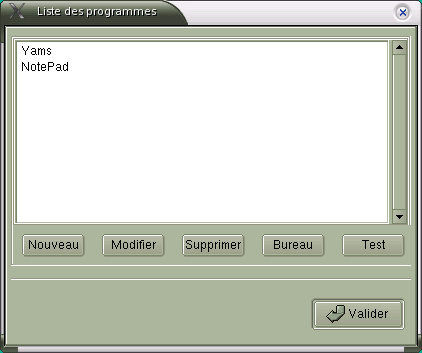
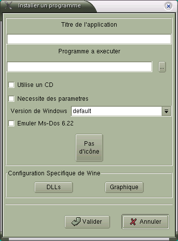
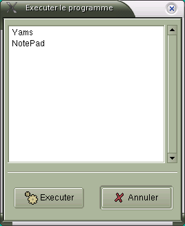
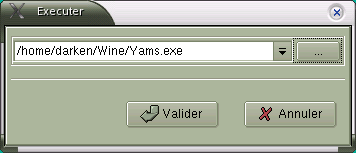

Chapitre 5. Configurer / Exécuter une application
5.1. Configurer une application
5.1.1. Gestion des applications
XWine propose de paramétrer les applications que vous
désirez
utiliser sous Wine.

Vous pouvez accéder à cette fenêtre :
- soit à travers le Menu Démarrer :
Démarrer>Paramètres> Installer/Désinstaller
- soit à travers le Panneau de Configuration :
Démarrer>Paramètres>Configuration de
Wine>Programmes
Vous pouvez alors :
- configurer une nouvelle Application ("Nouveau")
- modifier la configuration d'une application ("Modifier")
- supprimer une configuration logicielle ("Supprimer")
- tester une configuration pour vérifier qu'elle fonctionne
("Tester")
- placer une icône correspondant à l'application sur
le bureau
KDE ou Gnome ("Bureau")
5.1.2. Paramétrer une application
Lorsque vous cliquez sur Nouveau ou Modifier, vous accédez
à
la fenêtre suivante :

Ici vous allez pouvoir renseigner les paramètres suivants :
- Titre de l'application : indiquez son nom
- Programme à exécuter : sélectionnez le
programme à exécuter
via l'explorateur: bouton "...")
- Utilise un CD : s'il est coché, avant chaque
exécution
XWine vous demandera d'insérer le CD de l'application
- Nécessite des paramètres : s'il est coché,
avant
chaque exécution vous pourrez saisir des paramètres
- Version de Windows : permet de choisir la version de Windows pour
laquelle le logiciel a été optimisé
- Emuler Ms-Dos : permet de spécifier que le logiciel est
concu
pour Ms-Dos (uniquement avec la version Win31)
- Icône : cliquez ici pour choisir une icône
représentant
le logiciel
- Configuration Spécifique de Wine : les boutons DLL et
Graphique permettent de configurer la surcharge
des DLLs et le mode Graphique de Wine, uniquement pour l'application
(se reporter
à la section précédente)
5.2. Exécuter une application
Il y a deux méthodes pour exécuter une application via
XWine
:
- exécuter une application paramétrée
- exécuter une application non paramétrée
5.2.1. Exécuter une application paramétrée
Cliquez sur Démarrer>Programmes>Liste, et vous obtiendrez
la
fenêtre ci dessous :

Celle ci affiche la liste des applications qui ont été
paramétrées
(cf paragraphe 5.1), il suffit alors d'en sélectionner une et de
cliquer
sur Exécuter.
5.2.2. Exécuter une non paramétrée
Vous pouvez tout à fait exécuter une application non
paramétrée,
pour faire certains tests ou tout simplement parce que vous ne
désirez
pas la paramétrer (par exemple le programme install.exe d'un
CD-Rom),
il vous faut alors cliquer sur Démarrer>Exécuter et
vous
obtenez la fenêtre suivante :

Il vous faut alors taper la commande à exécuter puis
cliquer
sur Valider.
5.3. Installer un nouveau logiciel
Ceci est la démarche que j'utilise pour installer un nouveau
logiciel
à partir d'un CD-Rom. :
- Exécuter le setup ou install du CD-Rom
via la
boîte "Exécuter" (Démarrer>Exécuter).
- Une fois que le logiciel est installé, s'assurer qu'il
fonctionne
en faisant un test via la boîte "Exécuter".
- Paramétrer
l'application, pour lui donner un titre, au besoin
lui donner des spécificités pour les DLL ou autre
(Démarrer>Paramètres>Installer/Désinstaller)
- Tester l'application paramétrée via la liste des
programmes
: Démarrer>Programmes>Liste